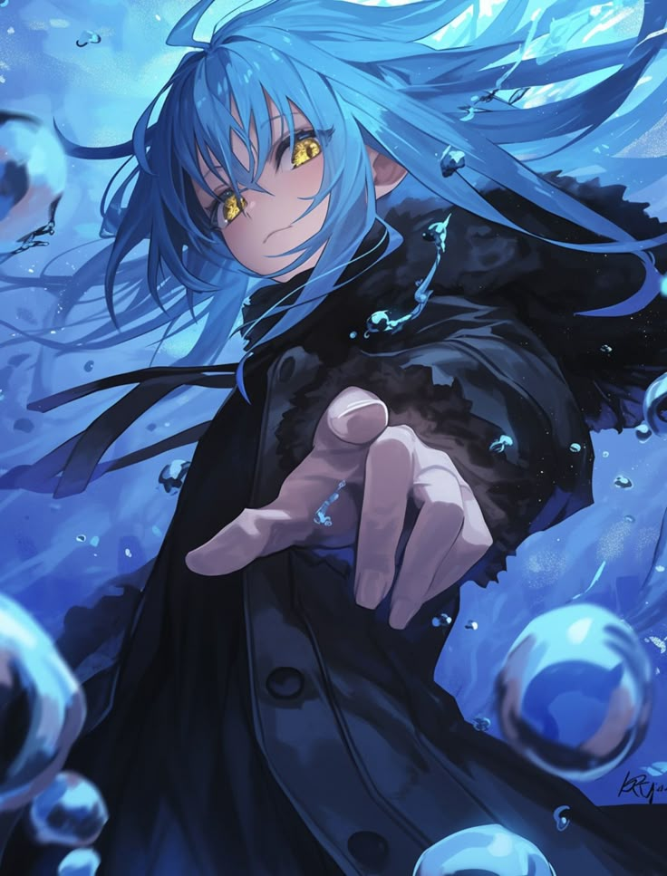
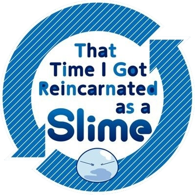

Aku adalah Rimuru Tempest
Aku seorang Demon Lord Octagram & King Of Jura Tempest
"Aku adalah Demon Lord Octagram, Raja dari hutan Jura yang sekarang menjadi ibu kota kerajaan Jura Tempest." Dulu aku hanya seorang manusia biasa, tapi kini aku adalah slime dengan kekuatan luar biasa. Aku mendirikan Tempest sebagai tempat bagi makhluk yang ingin hidup damai, tanpa takut diburu atau dihina. Sebagai pemimpin, aku tidak berusaha untuk menguasai dunia, tapi untuk melindungi orang-orang yang aku sayangi. Aku menyerap banyak kekuatan, tapi itu semua demi menciptakan dunia yang lebih baik untuk semua makhluk. Aku akan terus berjuang, memastikan Tempest tetap aman dan berkembang. Aku adalah Rimuru Tempest, dan ini baru permulaan.
